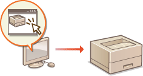
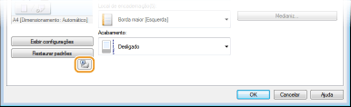
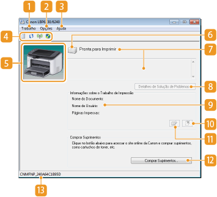

0KU8-00H
A Janela de Status da Impressora é um utilitário que permite verificar o status da impressora, visualizar informações de erro e fazer configurações relacionadas à impressora, tais como as configurações de economia de energia. Você também pode usá-lo para operações como cancelamento de um trabalho de impressão ou a impressão de uma lista de configurações da impressora. O utilitário Janela de Status da Impressora é instalado em seu computador automaticamente quando você instala o driver da impressora (Guia de instalação do driver de impressora).

Selecione a impressora clicando  na bandeja do sistema.
na bandeja do sistema.
na bandeja do sistema. 
|
|
|
Exibição automática da Janela de Status da Impressora
A Janela de Status da Impressora é automaticamente exibida quando ocorre um erro durante a impressão.
* Você pode alterar a configuração que determina quando a Janela de Status da Impressora é exibida automaticamente. Altere-a no menu [Opções]
Se estiver usando o Windows 8/Server 2012
Exibe a Janela de Status da Impressora depois de movê-la para a área de trabalho.
|
|
Exibindo a partir do driver da impressora
|
|
Clique
 na janela do driver da impressora. na janela do driver da impressora. |
Esta seção fornece uma visão geral da tela principal. Para descrições detalhadas das caixas de diálogo que podem ser exibidas com os controles e menus nesta tela, consulte a Ajuda. Menu [Ajuda]

 Menu [Trabalho]
Menu [Trabalho]Permite verificar os documentos impressos ou aguardando impressão. Também é possível selecionar documentos e cancelar a impressão.
 Menu [Opções]
Menu [Opções]Permite executar funções de manutenção como a impressão de listas de configuração ou limpeza da unidade fixadora, e fazer configurações na impressora, como economia de energia. Também é possível verificar informações como o número total de páginas impressas.
Exibe a Ajuda da Janela de Status da Impressora e informações de versão.

Você também pode exibir a Ajuda da Janela de Status da Impressora clicando no botão [Ajuda] nas diversas caixas de diálogo. Todavia, algumas caixas de diálogo não possuem um botão [Ajuda].
Barra de ferramentas
(Fila de Impressão)
Exibe a fila de impressão, uma função do Windows. Consulte a Ajuda do Windows para mais informação sobre a fila de impressão.
Exibe a fila de impressão, uma função do Windows. Consulte a Ajuda do Windows para mais informação sobre a fila de impressão.
 (Atualizar)
(Atualizar)Atualiza a Janela de Status da Impressora com as informações mais recentes.
 (Status da LAN sem fio)
(Status da LAN sem fio) Permite verificar o status de conexão (intensidade o sinal) da LAN sem fio.
 (Interface do Usuário Remota)
(Interface do Usuário Remota) Inicia o Remote UI. Usando o Remote UI
 Área de Animação
Área de AnimaçãoExibe animações e ilustrações sobre o status da impressora. Quando um erro ocorre, esta área também pode exibir uma explicação simples sobre como lidar com o erro.
 Ícone
ÍconeExibe um ícone que indica o status da impressora. O status normal é  mas quando ocorre um erro, a exibição muda para um dos /
mas quando ocorre um erro, a exibição muda para um dos /  /
/  , dependendo da mensagem.
, dependendo da mensagem.
mas quando ocorre um erro, a exibição muda para um dos / / , dependendo da mensagem. Área de mensagem
Área de mensagemExibe mensagens sobre o status da impressora. Se ocorre um erro ou aviso, esta área exibe uma explicação embaixo da mensagem de erro ou aviso, juntamente com informações sobre como lidar com o problema. Quando uma mensagem de erro aparece
 [Detalhes de Solução de Problemas]
[Detalhes de Solução de Problemas]Exibe informações de solução de problemas dos problemas descritos pelas mensagens.
 [Informações sobre o Trabalho de Impressão]
[Informações sobre o Trabalho de Impressão]Exibe informações sobre o documento sendo impresso.

 (Cancelar Trabalho)
(Cancelar Trabalho)Cancela a impressão do documento sendo impresso.

 (Continuar/Tentar Novamente)
(Continuar/Tentar Novamente)Quando ocorre um erro, mas a impressão pode ser continuada, este botão permite apagar o erro e retomar a impressão. Todavia, se você usar a função Continuar/Tentar Novamente para retomar a impressão, pode ocorrer que as páginas sejam parcialmente impressas ou outra erro de impressão.
[Comprar Suprimentos]
Se você clicar em [Comprar Suprimentos]  selecione seu país ou região clique [OK], uma página do website da Canon será exibida, onde você encontrará informações sobre a compra de suprimentos.
selecione seu país ou região clique [OK], uma página do website da Canon será exibida, onde você encontrará informações sobre a compra de suprimentos.
Barra de status
Exibe o destino da conexão (nome da porta) da Janela de Status da Impressora.